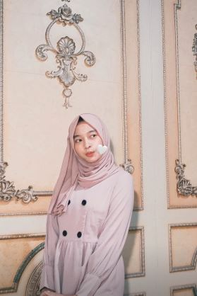

```html
<!DOCTYPE html>
<html lang="id">
<head>

<meta charset="UTF-8">
<meta name="viewport" content="width=device-width, initial-scale=1.0">

<title>Semangat Sekolah Mehwaa ❤️</title>

<style>

*{
    margin:0;
    padding:0;
    box-sizing:border-box;
}

body{
    font-family:Arial,sans-serif;
    background:linear-gradient(135deg,#ffd6e8,#fff5fa);
    overflow-x:hidden;
}

.wrap{
    max-width:1000px;
    margin:40px auto;
    padding:20px;
}

.card{
    background:#fff;
    border-radius:25px;
    box-shadow:0 15px 35px rgba(0,0,0,.15);
    padding:30px;
    display:flex;
    flex-direction:column;
    align-items:center;
}

h1{
    text-align:center;
    color:#ff4f81;
    font-size:46px;
    line-height:1.4;
    margin-bottom:30px;
}

.gallery{
    width:100%;
    display:grid;
    grid-template-columns:repeat(2,1fr);
    gap:15px;
    margin-bottom:30px;
}

.gallery img{
    width:100%;
    height:260px;
    object-fit:cover;
    border-radius:18px;
    box-shadow:0 5px 15px rgba(0,0,0,.15);
    transition:.3s;
}

.gallery img:hover{
    transform:scale(1.03);
}

#typing{
    max-width:760px;
    font-size:18px;
    line-height:2;
    white-space:pre-line;
    text-align:justify;
    color:#444;
}

.heart{
    position:fixed;
    top:-30px;
    animation:fall linear forwards;
    z-index:999;
}

@keyframes fall{

    to{
        transform:translateY(110vh);
        opacity:0;
    }

}

@media(max-width:768px){

    h1{
        font-size:34px;
    }

    .gallery{
        grid-template-columns:1fr;
    }

    .gallery img{
        height:220px;
    }

    #typing{
        font-size:16px;
    }

}

</style>
</head>

<body>

<div class="wrap">

<div class="card">

<h1>
📚<br>
Semangat Sekolah<br>
Mehwaa ❤️
</h1>

<div class="gallery">




</div>

<p id="typing"></p>

</div>

</div>

<audio id="musik" loop>
    <source src="lagu.mp3" type="audio/mpeg">
</audio>

<script>

const pesan=`📚 Semangat Sekolah, Mehwaa ❤️

hai mehwaa...

aku cuma mau kasih sedikit semangat buat kamu yang sekarang lagi menjalani hari-hari sekolah.

mungkin akhir-akhir ini sekolah terasa melelahkan.

tugas yang datang terus,
ujian yang semakin dekat,
belajar sampai capek,
belum lagi kegiatan lainnya yang kadang bikin pikiran penuh.

tapi aku mau kamu ingat satu hal...

kamu sudah sejauh ini.

jadi jangan menyerah cuma karena hari ini terasa berat.

nggak apa-apa kalau sesekali kamu merasa capek.

nggak apa-apa kalau kamu merasa bosan.

nggak apa-apa kalau ada hari di mana kamu merasa kurang semangat.

kamu manusia, bukan robot.

yang penting setelah istirahat,
kamu kembali mencoba lagi.

pelan-pelan nggak masalah.

yang penting tetap jalan.

kalau hari ini belum bisa mendapatkan hasil yang kamu inginkan,
jadikan itu alasan untuk belajar lebih baik besok.

jangan terlalu membandingkan dirimu dengan orang lain.

setiap orang punya prosesnya masing-masing.

mungkin ada yang lebih cepat,
mungkin ada yang terlihat lebih hebat,
tapi bukan berarti kamu nggak mampu.

percaya sama prosesmu sendiri.

aku yakin kamu bisa melewati masa sekolah ini dengan baik.

terutama kalau sekarang kamu sedang mempersiapkan ujian dan masa depan setelah sekolah.

belajar yang rajin ya.

kerjakan tugas semampumu.

kalau capek, istirahat.

kalau pusing, tenangkan pikiran.

kalau gagal, coba lagi.

dan kalau suatu saat kamu merasa ingin menyerah...

ingat kembali alasan kenapa kamu memulainya.

karena semua perjuangan yang kamu lakukan sekarang,
nantinya akan menjadi bagian dari cerita yang kamu banggakan.

semoga sekolahmu selalu dilancarkan.

semoga tugas-tugasmu dimudahkan.

semoga ujiannya diberikan hasil yang terbaik.

semoga semua ilmu yang kamu pelajari bisa bermanfaat.

dan semoga setelah lulus nanti,
kamu bisa mendapatkan jalan terbaik untuk mengejar apa yang kamu inginkan.

jadi...

tetap semangat ya, mehwaa. ❤️

jangan lupa makan.

jangan lupa istirahat.

jangan terlalu keras sama diri sendiri.

dan jangan pernah meragukan kemampuanmu.

kamu lebih kuat dari yang kamu kira.

semoga hari-harimu di sekolah dipenuhi banyak cerita baik,
banyak pengalaman,
dan banyak hal yang nantinya bisa kamu kenang dengan senyum.

semangat belajar.

semangat sekolah.

semangat mengejar cita-cita.

aku percaya kamu bisa. 🤍

— bintang sandy aji`;

let i=0;

function ketik(){

    if(i<pesan.length){

        document.getElementById("typing").innerHTML += pesan.charAt(i);

        i++;

        setTimeout(ketik,30);

    }

}

ketik();


const musik=document.getElementById("musik");

if(localStorage.getItem("playMusic")){

    musik.play().catch(()=>{

        console.log("Browser memblokir autoplay musik.");

    });

}


setInterval(()=>{

    const h=document.createElement("div");

    h.className="heart";

    h.innerHTML="❤️";

    h.style.left=Math.random()*100+"vw";

    h.style.fontSize=(20+Math.random()*20)+"px";

    h.style.animationDuration=(4+Math.random()*3)+"s";

    document.body.appendChild(h);

    setTimeout(()=>{
        h.remove();
    },7000);

},350);

</script>

</body>
</html>
```
